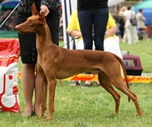

<table border="0" class="layout">
    <tbody>
        <tr>
            <td valign="top">
                <div class="holster">
                    <div class="block_container s3 b-text b-static-text user_css_12816005438" id="e_127780492260">
                        <p><em><strong>Евтеева Мария</strong></em></p>
                        <p>тел.(495)467- 85-25</p>
                        <p><strong>Заходите к нам в <a href="http://www.pongo.ru/">гости</a></strong></p>
                    </div>
                    <div class="block_container s3 b-image txt-center" id="e_1282816071280"><span></span></div>
                </div>
            </td>
            <td>
                <div class="holster">
                    <div class="block_container s3 b-text b-static-text user_css_12816005438" id="e_128281602054">
                        <p style="text-align: center;"><span style="color: #006600;"><span style="color: #0000ff;"><strong>Фараонова Собака</strong></span></span></p>
                        <p style="text-align: justify;"><span style="color: #006600;"><span style="color: #0000ff;"><strong>Из истории породы:</strong> древнейшая порода собак, известна не менее 5 тысяч лет, о чем свидетельствуют найденные изображения фараоновой собаки в древнеегипетских гробницах. Полагают, что финикийские купцы завезли эту породу на острова Средиземного моря, где породу тысячелетиями разводили в чистоте. В Великобританию фараонова собака попала в 1920, но большого успеха не имела, однако через 40 лет вновь привезенные собаки стали пользоваться большей популярностью. В 1968 они были признаны в Великобритании, а затем и в Канаде, но только в 1975 получила официальное признание. В России и в других странах имеются единичные экземпляры. Используется в основном как собака-компаньон, хотя может охотиться по следу и "по-зрячему".</span></span></p>
                        <p style="text-align: justify;"><span style="color: #006600;"><span style="color: #0000ff;"><strong>Общая характеристика:</strong> умная, привязчивая, игривая собака, ладит с детьми. Недоверчива к посторонним. Неприхотливая.<br />Содержание и уход: эта собака нуждается в продолжительных прогулках на свободе. Она не подходит для жизни в городской квартире. Ее гладкая, шелковистая шерсть не требует трудоемкого ухода. </span></span></p>
                        <p style="text-align: justify;"><span style="color: #006600;"><span style="color: #0000ff;"><strong>Размеры:</strong> рост 56-63 см (кобели), 53-61 см (суки).</span></span></p>
                        <p style="text-align: justify;"><span style="color: #006600;"><span style="color: #0000ff;">_________________________________</span></span></p>
                        <p style="text-align: justify;"> </p>
                    </div>
                </div>
            </td>
        </tr>
    </tbody>
</table>​
